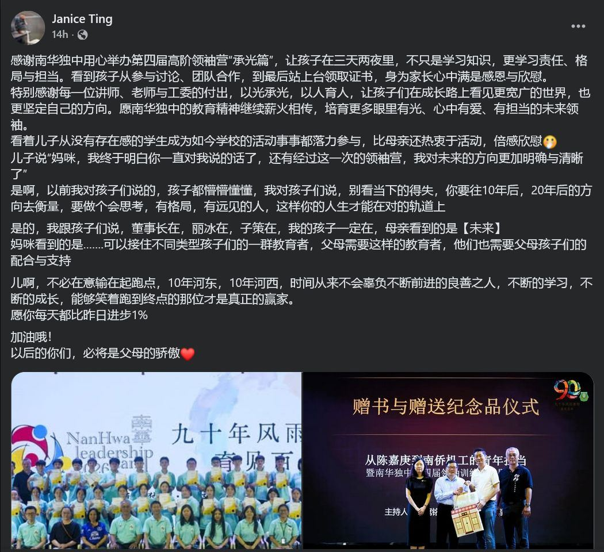

【感恩有您 • 承光而行，见证孩子的格局与蜕变 ✨】
【感恩有您 • 承光而行，见证孩子的格局与蜕变 ✨】
在第四届高阶领袖营“承光篇”落幕后，校方收到了来自营员家长 Janice Ting 非常令人动容的长文回馈。
看到孩子在三天两夜里，不仅学习知识，更学会了责任与担当，甚至对妈妈说出：“我对未来的方向更加明确与清晰了”…… 这番话，让我们深深感受到教育“以光承光，以人育人”的重量。
💬 家长分享原文：
「感谢南华独中用心举办第四届高阶领袖营“承光篇”，让孩子在三天两夜里，不只是学习知识，更学习责任、格局与担当。看到孩子从参与讨论、团队合作，到最后站上台领取证书，身为家长心中满是感恩与欣慰。
特别感谢每一位讲师、老师与工委的付出，以光承光，以人育人，让孩子们在成长路上看见更宽广的世界，也更坚定自己的方向。愿南华独中的教育精神继续薪火相传，培育更多眼里有光、心中有爱、有担当的未来领袖。
看着儿子从没有存在感的学生成为如今学校的活动事事都落力参与，比母亲还热衷于活动，倍感欣慰🤭
儿子说“妈咪，我终于明白你一直对我说的话了，还有经过这一次的领袖营，我对未来的方向更加明确与清晰了”
是啊，以前我对孩子们说的，孩子都懵懵懂懂，我对孩子们说，别看当下的得失，你要往10年后，20年后的方向去衡量，要做个会思考，有格局，有远见的人，这样你的人生才能在对的轨道上
是的，我跟孩子们说，董事长在，丽冰在，子策在，我的孩子一定在，母亲看到的是【未来】
妈咪看到的是…….可以接住不同类型孩子们的一群教育者，父母需要这样的教育者，他们也需要父母孩子们的配合与支持
儿啊，不必在意输在起跑点，10年河东，10年河西，时间从来不会辜负不断前进的良善之人，不断的学习，不断的成长，能够笑着跑到终点的那位才是真正的赢家。
愿你每天都比昨日进步1%
加油哦！
以后的你们，必将是父母的骄傲❤️」
---
教育不是注满一桶水，而是点燃一把火。正如同这位家长所言，南华有一群愿意竭尽所能“接住不同类型孩子”的教育团队；而校方更要感谢的，是长久以来愿意信任、全力配合并给予学校无限支持的家长们！
正如本届主题“承光篇”，愿孩子们承载着这份光芒，在未来的路上走得更有格局、更有底气。南华将继续与父母携手，静待每一朵花开。🌹
#曼绒南华独中 #第四届高阶领袖营 #承光篇 #家校共育 #见证成长
